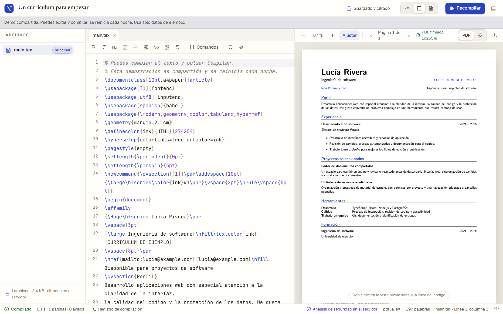

P-51 · Demostración del editor
Se conserva el diseño «Papel y tinta». La portada abre el documento de ejemplo sin pedir una cuenta.
Escribe LaTeX en equipo.
Escribe con tu equipo, compila y descarga tu PDF. Prueba el editor sin crear una cuenta.

Un currículum para empezar
Demo compartida. Puedes editar y compilar; se reinicia cada noche. Usa solo datos de ejemplo.
El editor mantiene los controles de código, vista previa y compilación. La demo oculta las acciones de cuenta, nuevos archivos y administración.
Estados del acceso
Cargando: «Abriendo el editor…», botón deshabilitado y estado ocupado accesible.
Error: aviso junto al botón y posibilidad de reintentar.
Límite alcanzado: «La demo está ocupada. Vuelve a intentarlo en unos minutos.»
Registro cerrado: se ofrece regresar a la portada para usar la demo.